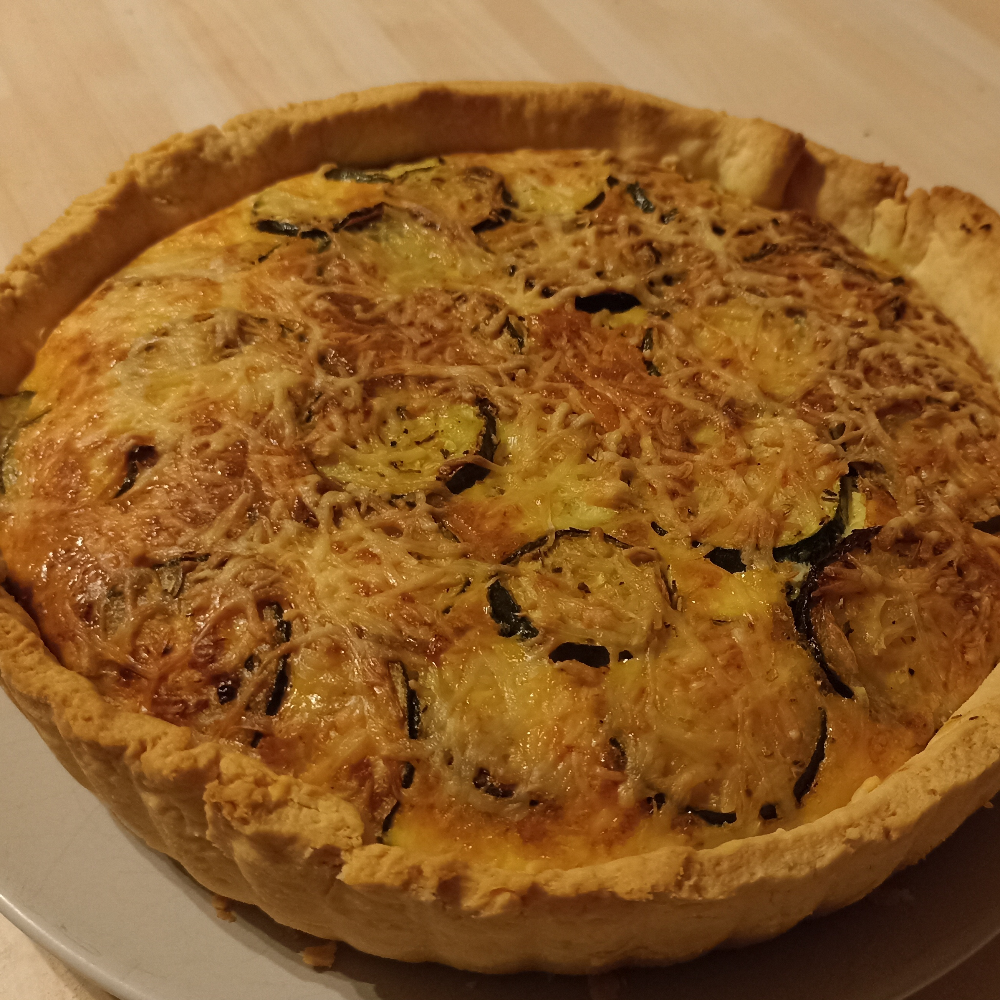
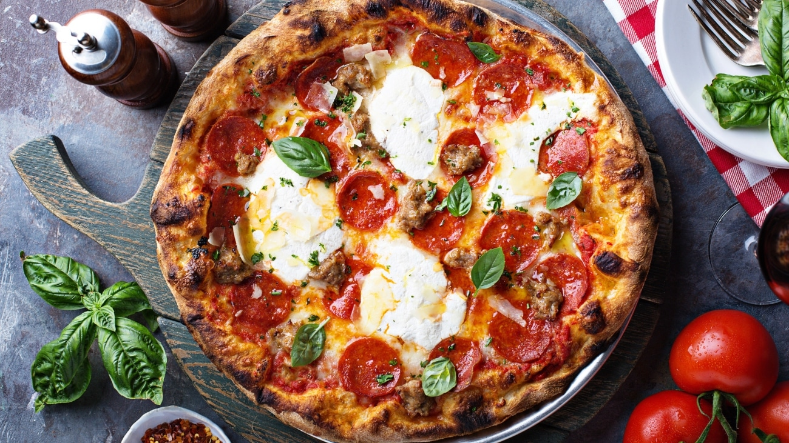
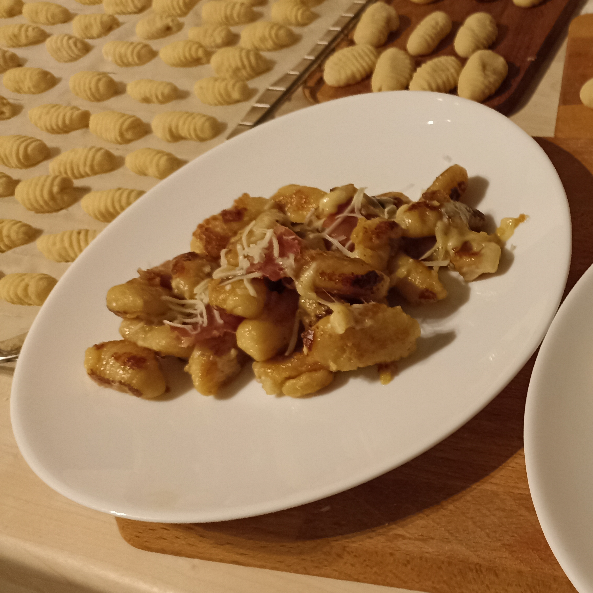
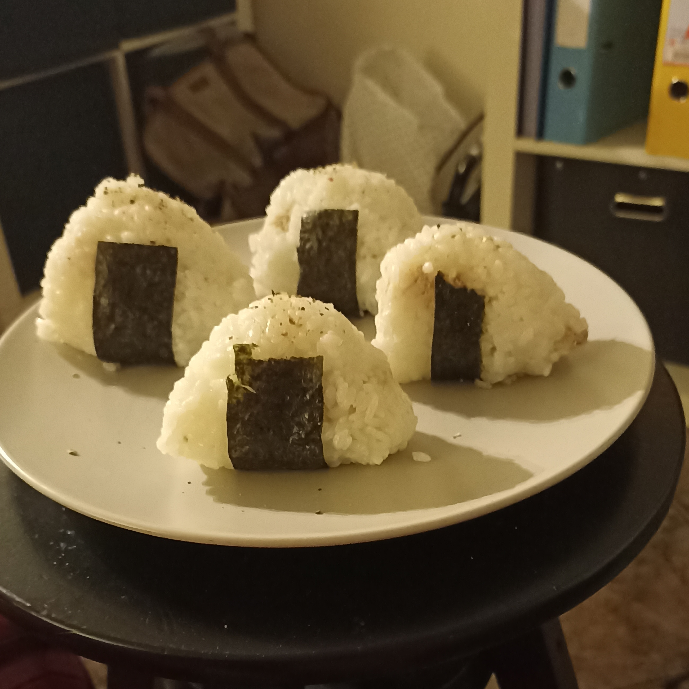

-
Quiche courgettes chèvre
Ingrédients
- À suivre
Préparation
- À suivre
-
Pizza
Ingrédients
- Sauce provençale ou bolognaise
ou crème fraîche - Gruyère râpé
- Jambon cru
- Chèvre ou mozzarella
Préparation
- - Pour la recette de la pâte à pizza,
rendez-vous sur la page "Les bases culinaires" ! - - Fleurer le plan de travail et étaler la pâte dessus
- - Étaler la sauce ou la crème sur la pâte
- - Mettre le chèvre ou la mozzarella
si vous le souhaitez - - Mettre le gruyère et enfin le jambon cru
- - Ne pas oublier de faire les croûtes
avant de faire cuire la pizza
- Sauce provençale ou bolognaise
-
Gnocchis di patate
Ingrédients
- 1kg de pommes de terre rouges
- 1 oeuf
- 300g de farine
- Du sel
Préparation
- - Faire cuire les pommes de terre dans l'eau
pendant 40 minutes à compter de l'ébullition - - Mettre la farine sur le plan de travail et faire un puits
- - Presser les pommes de terre encore
chaudes au centre du puits - - Ajouter l'oeuf légèrement battu
- - Mélanger avec les mains jusqu'à obtenir
une pâte molle et compacte - - Ne pas trop pétrir la pâte
- - Couper un morceau de pâte et
le rouler pour en faire un boudin - - Couper des petits morceaux d'environ 2cm d'épaisseur
- - Façonner les gnocchis avec la planche à gnocchis
ou une fourchette = en appuyant légèrement avec le pouce,
faire glisser le gnocchi pour lui imprimer la forme - - Déposer les gnocchis sur une planche en les espaçant bien
- - Pour la cuisson : mettre les gnocchis dans l'eau
bouillante et dès qu'ils remontent, ils sont cuits ! - - Faire griller les gnocchis dans une poêle
avec un peu d'huile d'olive
-
Onigiri
Ingrédients
- Riz japonais
- Feuilles d'algue nori
- Thon émietté
Préparation
- - Faire cuire le riz à la japonaise
- - Une fois le riz cuit, l'étaler sur
une assiette pour qu'il tiédisse - - Prendre une petite quantité de riz
et commencer à former une boule - - Mettre du thon au centre et
façonner l'onigiri en sorte de montagne - - Couper un rectangle de feuille de nori, l'humidifier et
entourer partiellement l'onigiri par le dessous
-
Mettre une recette

Ingrédients
- À suivre
Préparation
- À suivre